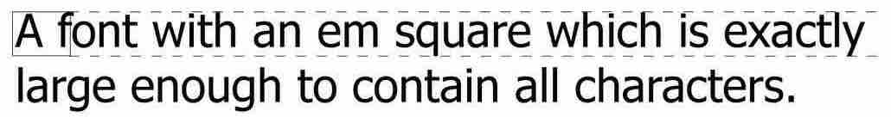

-
Font Families
- Serif fonts
- Sans-serif fonts
- Monospace fonts
- Cursive fonts
- Fantasy fonts
- 当字体设定文字中包含空格或特殊字符% % #等，需要使用引号将字体括起来
- em box
- em box 包含字体baseline之间的高度

- font-size指定了em box的大小
- font-size，子元素继承父级元素计算后的值
- Font-Variant With Small-Caps
- FONT-STRETCH和FONT-SIZE-ADJUST在CSS2中定义，在CSS2.1中移除